Pingtype Documentation
2017-04-25
Questions? Please email me at:
有 疑問 嗎 ？ 請 電子 信箱 至 ：
您 是 程式 設計師 嗎 ？ 請 閱讀
研發 手冊.
Pingtype is a literal translator for Chinese. It breaks a sentence into words, puts spaces in between, then shows each word next to the pinyin and English. It also includes a text entry method based on taking characters apart and putting them back together.
Pingtype 是 一個 中文 詞彙 翻譯 平台 ， 它 打破 了 字句 間 的 隔閡 ， 只需 將 字詞 放入 中間 空白 處 ， 每一個 字詞 就可以 在 旁邊 的 欄 位 顯示 拼 音 及 英文 ， 也 包含 可 將 中文 字 元 拆開 ， 且 系統 會 自行 把 這些 拆開 的 字 元 拼 組成 一個 完整 中文 字 元 的 輸入 法 。
Index 首頁
Data sources 資料 來源
需要 文字 。 這些 從 哪裡 來 ？
資料 來源.
Learning Chinese 學習中文
This program is only one part of my ongoing effort to learn Chinese. The user guide only explains how to use the software, so I'll write my thoughts about the education system in another
article.
這個 程式 是 我 在 努力 學習 中文 的 一部分 ， 這 使用 指引 會說 明 如何 使用 這 軟體 ， 所以 我 會 再 寫下 另一個
文章 關於 我 對 教育 系統 的 想法 。
HTML output 輸出
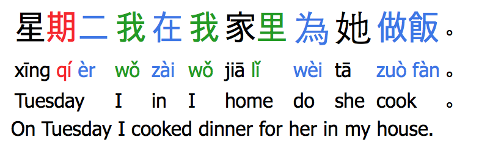
This is the type of text that Pingtype produces. On the first line is Chinese text, with spaces between each word and colours for each tone. The second line has pinyin. The third line has a literal translation of that word into English. Finally, the fourth line has a real English translation.
這是 Pingtype 文字 產生 器 。 第一 區 塊 是 中文 ， 每個 字 會 依照 中文 的 音調 （ 一 聲 、 二 聲 、 三 聲 、 四 聲 ） ， 都有 顏色 標 註 。 第二 區 塊 是 拼 音 ， 第三 區 塊 是 將 該 詞彙 翻譯 成 英文 ， 最後 ， 第四 格 是 實際上 的 英文 翻譯 。
Chinese, English text input 中英文 文字 輸入
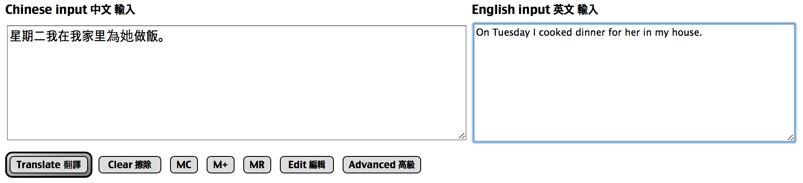
Type or copy-paste your Chinese text into the first text area. If you have English text, you can type that into the second text area. Let's use a sample sentence.
您 可以 打字 或是 貼 上 中文 文字 到 第一個 區 塊 ， 若是 英文 單字 ， 您 可以 打 在 第二 個 區 塊 ， 以下 我們 用 一個 簡單 的 例子 來說 明 。
"星期二我在我家里為她做飯。"
"On Tuesday I cooked dinner for her in my house."
When you're ready, press the Translate button to generate the text and HTML output. You can leave the English text blank if you don't have it.
當 您 打好 或 貼 上 文字 準備 就緒 後 ， 按 下 「 翻譯 」 鈕 ， 就會 出現 文字 及 HTML 輸出 。 若 無 英文 詞句 ， 在 第二 區 塊 可 留 白 也 無 妨 。
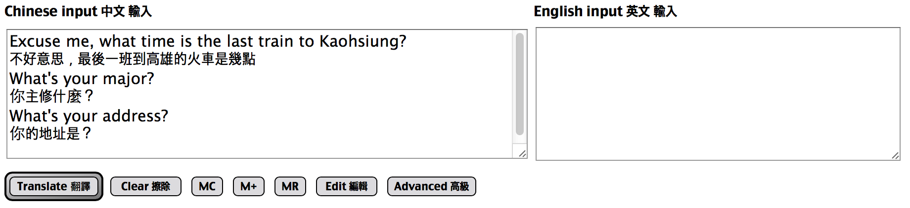
If you have text in English and Chinese on alternating lines, you can paste that into the Chinese text area. The English should be on the line before the Chinese.
如果 您 的 文字 是 中 英文 交替 ， 您 可以 貼 在 第一 中文 區 塊 的 欄 位 裡 ， 英文 行 句 必須 要 在 中文 行 句 之前 。
Text output 文字 輸出
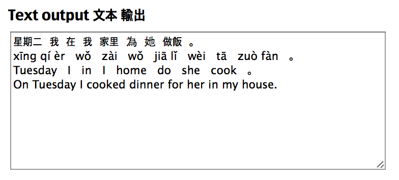
If you want to copy-paste your text to another place (e.g. music lyrics), you may prefer to have it in plain text. The text area on the top-right has the same output in plain text.
如果 您 想要 把 這些 文字 貼 到 另一個 地方 （ 如 歌 詞 ） ， 若 希望 是 純 文字 ， 在 文字 區 塊 的 右上 方 ， 有 一 純 文字 輸出 。
Typing characters 鍵入 字元
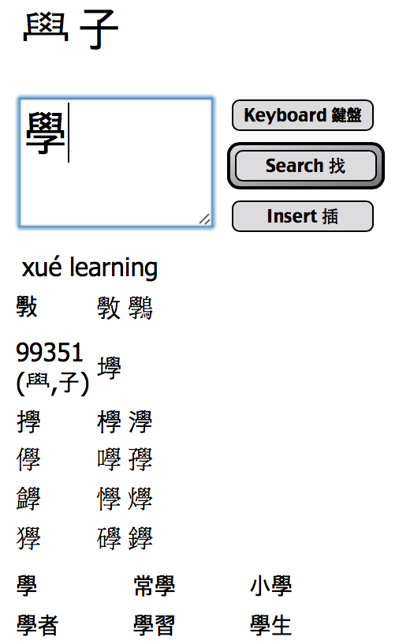
You want to type, but Chinese is hard. Pingtype's text input box lets you take a character apart and put it back together using its parts. Each character has "parents" and "children". When you click the Search button, the parents are shown above the input box. You can click these to find "grandparents", and so on.
您 想 打字 ， 但是 中文 很 難 。 Pingtype 的 文字 輸入 框 可以 讓 您 把 中文 字元 或 字詞 拆開 ， 然後 再把 它 拼 組 再 一起 。 例如 中文 字 「 父 」 或 「 母 」 ， 您 可以 點 選 搜尋 ( search) 鈕 ， 「 父 」 或 「 母 」 這 詞 就會 除了 顯示 在 這 欄 位 中 ， 也會 出現 其他 造 詞 ， 如 「 祖父母 」 ， 依 此 類 推 。
The children are shown in a table underneath. For example, 斅 is 學 + 攴. If you search for 學, you can see 斅 below.
如 前 所述 ， 相關 詞 如 「 小孩 」 這 字元 就會 顯示 在 這 欄 位 下方 。 舉例 ： 斅 = 學 + 攴 。 如果 您 搜尋 「 學 」 這個 字 ， 您 就可以 看到 斅 這個 字 在 下方 。
Some parts of characters don't have a character to represent them. These are shown as numbers (e.g. 99351). You can treat the numbers like other parents/children, and click on them to find related characters.
有 一些 被 拆開 來的 字元 是 沒有 中文 意義 的 ， 您 會 看到 有些 會 顯示 數字 （ 如 99351） ， 您 可以 把 這些 數字 當成 是 一個 家族 ， 然後 點 選 下面 相關 的 詞彙 。
Words are also shown in the table below. This is useful if a character is hard to find. Sometimes the characters next to it are easier to type, and then you can find the word.
單字 都會 顯示 在 欄 位 下方 ， 以前 述 為例 ， 如果 您 不知道 您 要 的 單 詞 ， 這 功能 很 方便 ， 有時候 您 打一 個字 詞 ， 下方 就會 出現 一些 相關 的 詞彙 ， 就可以 幫助 您 找到 這 字詞 。
You can also search for many parts of a character at the same time. If you type "力" (lì) and "口" (kǒu), then only characters that include both of those parts will be shown. The one we want is probably "加" (jiā). This is useful if you can read half a character. This also shows that Traditional Characters are easier to read than Simplified.
您 也可以 同時 搜尋 字元 的 一部分 ， 如 打 「 力 」 和 「 口 」 ， 系統 就會 把 它 組成 一個 字 ： 「 加 」 ， 這 對於 若 只會 讀 中文 字 中的 某一 半 字元 或 部 首 的 您 非常 實用 ， 也 讓 傳統 字元 簡化 ， 讀 起來 更 容易 。

There is a handwriting recognition keyboard built into iPhones. That is what I usually use to type parts of characters. I already know many characters though, and some of those have a lot of strokes (e.g. "的"). They are faster to type using pinyin. Changing keyboard is a hassle, so a pinyin keyboard is also available in Pingtype.
iPhones 有 內建 手寫 鍵盤 ， 這是 我 通常 用來 打字 元 的 工具 ， 我 已經 知道 很多 字元 ， 但是 有 一些 很多 筆畫 （ 如 ： 的 ） ， 如果 用 拼 音 的 話 可以 打 很快 。 變更 鍵盤 很 麻煩 ， 所以 在 這 Pingtype 可以 使用 拼 音 鍵盤 。
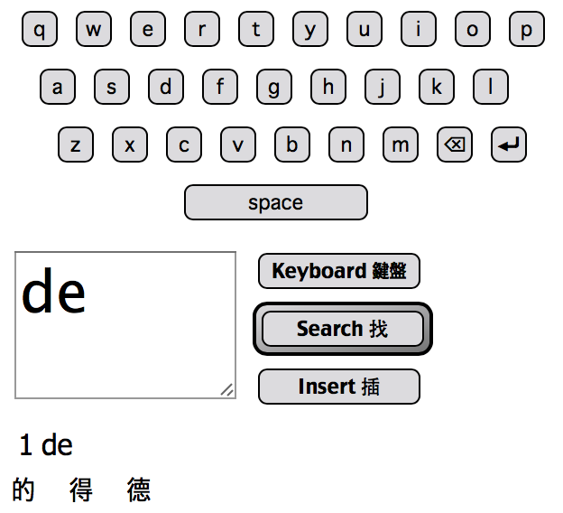
When you find the character you want, click the "Insert" button to add it to the Chinese input text area. Build up a sentence, click Translate, and see the word-spaced result.
當 您 找到 您 要 的 字 後 ， 可以 點 選 「 插入 」 鈕 ， 系統 會 把 它 加 在 上方 中文 輸入 的 區 塊 ， 建立 一個 句子 ， 點 選 翻譯 後 ， 您 就可以 看到 翻譯 結果 。
Copying from images 從 圖檔 複製
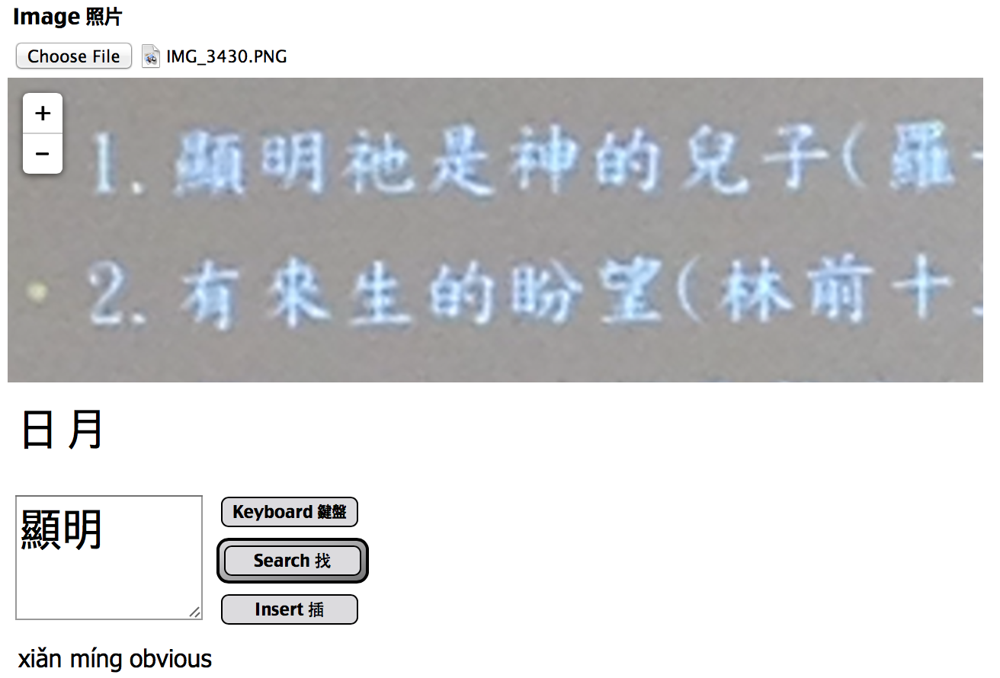
If you want to copy characters from a photo, you can load one from your camera roll. Click "Choose File", and the picture will show inside the box. You can drag it around, and zoom in or out.
如果 您 想要 複製 圖檔 上 的 字元 ， 您 可以 從 您 電腦 中的 相機 膠 捲 裡 加 載 。 點 選 「 選擇 檔案 」 ， 然後 圖檔 將會 顯示 在 框 裡 ， 您 可以 拖 曳 或是 放大 或 縮小 。
I didn't know the word "顯" (xiǎn). Instead, I used the handwriting keyboard to type "明" (míng). Then I looked at the search results for words, and quickly found the word I wanted.
我 不知道 「 顯 」 這個 詞 ， 但 我 用 手寫 鍵盤 輸入 「 明 」 ， 我 看了 下方 的 搜尋 結果 後 ， 就 很快 找到 我 想要 的 這個 字 。
Alternatively, I could have typed "頁" (yè), and tried to build up the character "顯". But "頁" has many children, so I found it faster to type "明" (míng) and search for words. I could even have typed "日" rì + "月" yuè to get "明" (míng).
或者 我 也可以 打 「 頁 」 ， 然後 試 著 造 字 成 「 顯 」 但是 「 頁 」 這個 字 有 很多 小孩 （ 有 很多 中文 字 都有 頁 這個 部 首 ） ， 所以 我 打 「 明 」 來 找到 「 顯 」 這個 字 相對 會 快 很多 ， 我 甚至 也可以 打 「 日 」 ＋ 「 月 」 得到 「 明 」 這個 字 。
Memory 記憶
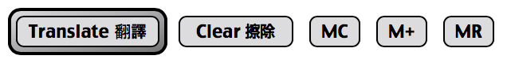
You finally typed a sentence! Congratulations! Now you want to save it, and type the next one. The MC, M+, and MR buttons work like a calculator.
您 終於 打 出了 一個 句子 ！ 恭喜 ！ 現在 您 想要 把 它 存 起來 ， 然後 再打 下一 句 。 MC, M+ 和 MR 鈕 就像 是 計算機 的 功能 一樣 。
M+ appends the current phrase to the memory. It does not erase what is already saved.
M+ ： 可以 把 現在 的 字句 記憶 存入 ， 它 不會 清除 已經 存入 的 內容 。
MR loads all the memory into the Chinese input text area.
MR ： 將 所有 已 記憶 存入 的 字句 ， 轉 入 到 您 中文 輸入 文字 的 區 塊 。
MC clears the memory, so you lose everything you saved.
MC： 清除 已 記憶 存入 的 內容 ， 所以 您 會 失去 您 先前 存入 的 字句 。
Clear only clears the view, it does not clear the memory. You can use MR to recall the saved phrases.
Editing the dictionary 編輯 字庫
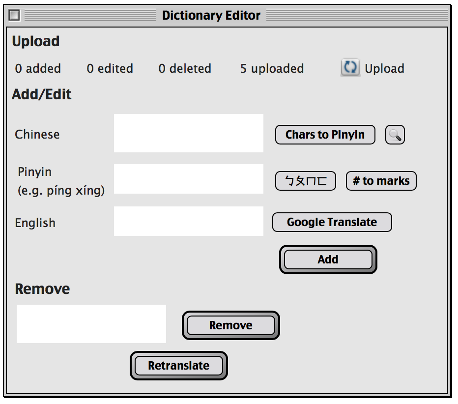
I need you! 我需要您！
My Chinese is not very good yet. I need to add words. I need to edit words. Sometimes I need to remove words. This is all possible using the Dictionary Editor. Please use it, and don't forget to upload! First press the Edit button to open the floating window. You can then drag that around your screen using the mouse.
我的 中文 還不是 很好 ， 我 需要 加上 更多 的 詞彙 ， 我 需要 編輯 詞彙 。 有時候 必須 要 移除 字詞 ， 可以 使用 字庫 編輯 器 ， 也歡 迎 您 使用 它 ， 不要 忘記 上 傳 ！ 首先 按 編輯 鈕 打開 移動 視 窗 ， 您 可以 使用 滑鼠 游 標 拖 曳 視 窗 。
If a word does not exist, then please remove it. Copy-paste the word into the Remove text area, and click the Remove button. Then click Retranslate. Sometimes you have to do this more than once.
如果 有 一個 字 是 不 存在 的 ， 請 您 移除 它 ， 將 它 複製 貼 上到 「 刪除 」 區 塊 ， 然後 點 選 移除 鈕 ， 之後 再 點 選 「 重新 翻譯 」 ， 有時候 會 重複 這 動作 好幾 次 。
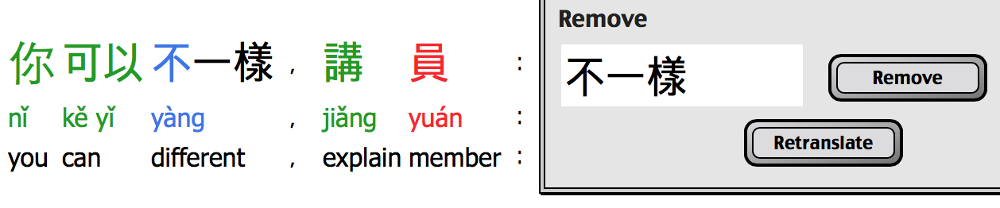
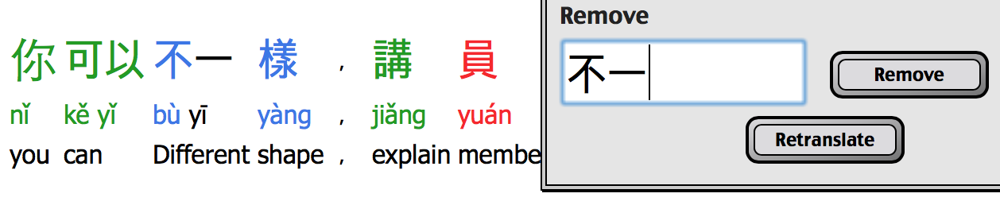
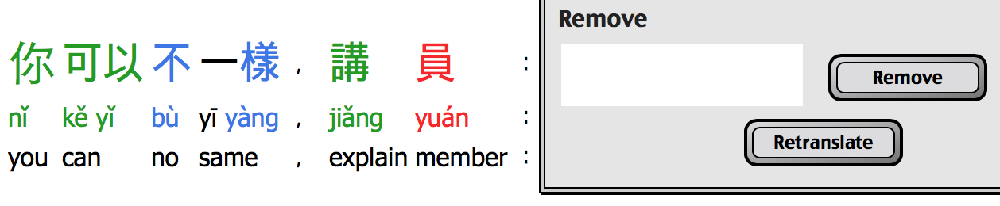
You can also add a word to the dictionary. Copy-paste the word into the Add textarea. Don't worry if there are extra tabs; you can remove them by clicking the Search 🔍 button. This also looks up the word in the dictionary, in case you want to edit an existing word.
您 可以 在 字庫 中 添加 新 的 詞彙 ， 將 它 複製 貼 上到 「 加入 」 區 塊 ， 如果 有 多 的 空格 請 不要 擔心 ， 您 可以 點 選 「 搜尋 」 來 移除 ， 這 也可以 檢視 個 這個 字 是否 已經 在 字庫 中 ， 避免 編輯 已經 存在 字庫 中的 文字 。
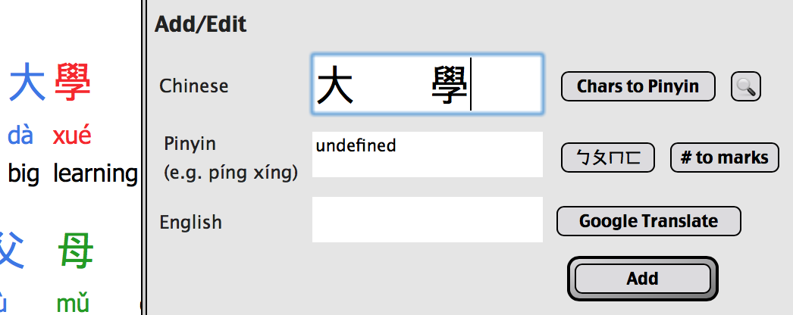
You can click the "Chars to Pinyin" button to guess the pinyin based on the characters. Note that sometimes the pronunciation changes based on the word, so you should double-check with Google Translate. For example, 一起 is pronounced yì qǐ, not yī qǐ (n.b. Google Translate is wrong about this). You can change the tone by adding tone numbers, and then pressing the "# to marks" button to turn that into tone marks. There is also a bopomofo keyboard for typing the pinyin, if you prefer that.
您 可以 點 選 「 Chars to Pinyin」 來 根據 字元 來 猜 拼 音 ， 請 注意 ， 有時候 發音 會 隨著 字詞 而 變化 ， 您 可以 使用 google 翻譯 再次 確認 。 例如 「 一起 」 的 一 ， 發音 為 四 聲 「 ㄧ ˋ ㄑ ㄧ ˇ 」 ， 而不是 一 聲 （ ㄧ ㄑ ㄧ ˇ ） （ 在 這 google 翻譯 是 錯 的 ） 。 您 可以 加入 聲調 的 數字 來 改變 聲調 ， 然後 按 下 「 # to marks」 來 轉換 聲調 的 標記 。 如果 您 願意 ， 這 還有 一個 ㄅ ㄆ ㄇ 鍵盤 可以 讓 您 打拼 音 。
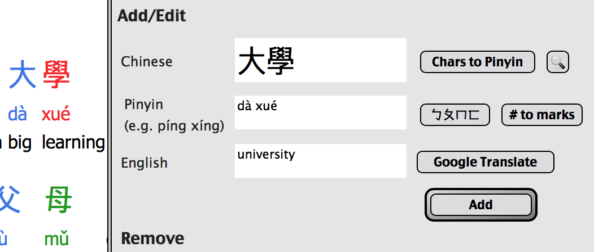
Then type the English word that has the same meaning as the Chinese word, and click Add. Then click Retranslate, and see that the word has been combined into one.
再來 收入 與 中文 字 意 相同 的 英文 單字 ， 然後 點 選 「 加入 」 ， 再 點 選 「 重新 翻譯 」 ， 然後 就會 看到 這些 字 合併 成 一個 。
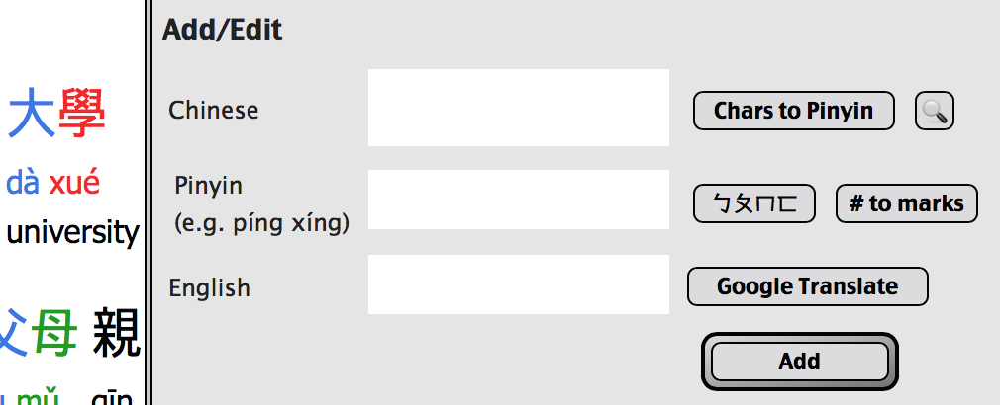
You can also edit definitions using the Add button. If the word already exists, the new definition will be used.
您 還 可以 使用 「 加入 」 鈕 來 編輯 字詞 的 定義 ， 如果 這個 字 已經 存在 ， 則 會 採用 新 的 定義 。
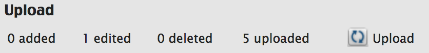
Please upload your changes so I can fix the dictionary on my server! Just click the upload button.
請 上 傳 您 的 變更 ， 如此一來 我 就可以 為 大家 修補 字庫 ， 只需 點 擊 上 傳 鈕 。